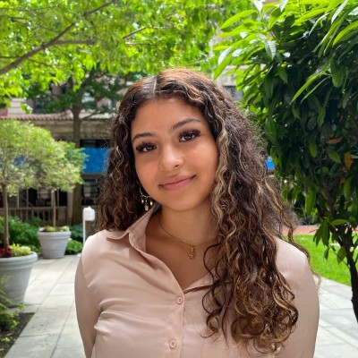

Description
Developing a curriculum for around 10 independent sessions that would introduce NYC public high school students (11-12 graders) into the bigger field of technology. Through these sessions, the students will be able to develop a better understanding of how technology is intertwined with their various interests. It will also provide the students with a solid foundation for a Computer Science major at a higher educational institution with hopes of bridging the achievement gap.
Background
CS For All: An organization to bring computer science classes to all K-12 public schools by providing a free curriculum directory. Provides 76 Algorithms and Programming, 44 Computing Systems, 43 Data and Analysis, 48 Impacts of Computing, and 32 Networks and Internet courses at varying costs and lengths. Includes sub-concepts: Algorithms, Control, Culture, Devices, Modularity, Program Development, Safety, Law, and Ethics, Social Interactions, Variables, and Visualization and Transformation.
AP Computer Science A: Focuses on computing skills related to programming in Java (equivalent to a college-level intro to computer science course) Modularity, Variables, Impact of Computing. Units 1-10 are: Primitive Types, Using Objects, Boolean Expressions and if Statements, Iteration, Writing Classes, Array, ArrayList, 2D Array, Inheritance, and Recursion. There is also a lab component focusing on group work and problem solving (Found in Course Overview and Course and Exam Description).
AP Computer Science Principles: Provides students with a broad introduction to computer science (equivalent to a college-level breadth course) and how it relates to other fields. Focuses on computational thinking practices and learning with the following areas of study: Creative Development, Data, Algorithms and Programming, Computing Systems and Networks, Impact of Computing. Computational Solution Design: Design and evaluate computational solutions for a purpose. They aim to teach the following skill: Algorithms and Program Development, Abstraction in Program Development, Code Analysis, Computing Innovations, and Responsible Computing (Found in Course Overview and Course and Exam Description).
Code.org: Provides coding courses AP CSA, AP CSP, CS Discoveries for grades 6-10, CS Fundamentals for ages 4-11, Pre-reader Express for ages 4-8, CS Fundamentals: Express for ages 9-18, and professional learning to teach for all ages.
Hour of Code: An initiative to have school-aged students participate in coding games and exercises for “pre-reader” to grades 9+ for one hour a year to introduce them to coding skills.
Google CS First: A resource that provides hour-long coding lessons, Hour of Code programming, eight lessons with multi-day units, and two advanced coding courses.
Khan Academy: Provides Hour of Code lessons and courses in Computer programming, Computers and the Internet, AP®︎/College Computer Science Principles, Pixar in a Box Animation, Computer science (Algorithms, Cryptograph, and Information theory), and Computers and the Internet in partnership with Code.org.
Motivation
Our main motivations for this project stem from our own experience of trying to adjust to the Computer Science curriculum at Columbia as first year students. All three of us were coming to college from New York City Public High Schools with little to no experience in the tech world. Despite starting off with introductory courses in the CS department just as all prospective CS majors are required to do, we still felt a huge learning curve and felt as though we were at a disadvantage. There were students in our Intro CS classes that had years of experience under their belt while we were just starting out. We decided we wanted to create a program that can be implemented in high schools in order to help bridge this gap.
Vision
As of now, the program can consist of ten 60 minute sessions that can be implemented in a format of an afterschool program. Each session will delve into a different topic of technology. Below are some ideas for the sessions:
- Introduction to Leetcode/Basics of Coding
- How to Prepare for Internships & Technical Interviews
- Research in Computer Science
- Series of Sessions that Discuss the Intersection of CS and other fields (English, Music, etc)
- Guide to Hackathons (what are they? is it worth it?)
Timeline
Project Tracker
Meet the Team

Nazaret Cuadros
BC '23